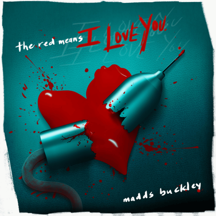
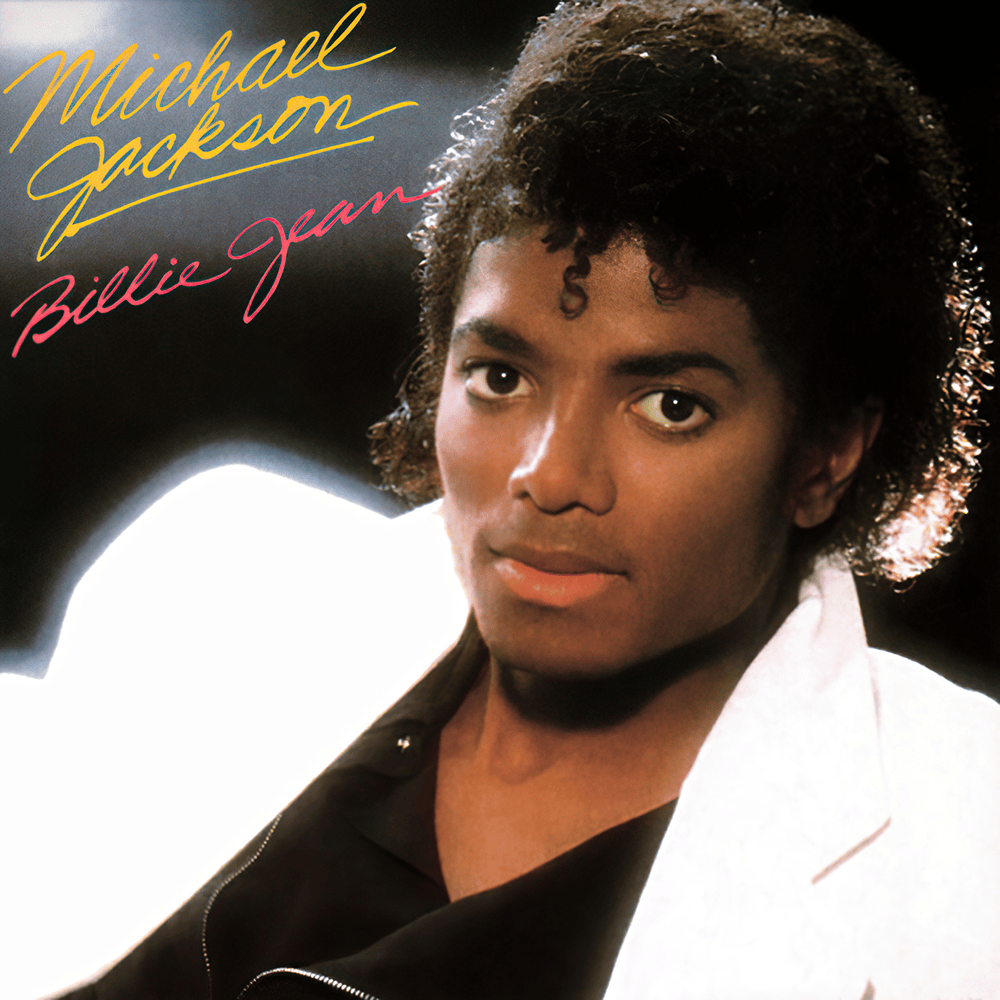

[Verse 1]
Tides thrash inside, baby, I'm high octane
Fever in a shock wave
My core vibrates in an opium haze
Yet you think we're the same
[Chorus]
The skyline falls as I try to make sense of it all
I thought I'd uncovered your secrets but, turns out, there's more
You adored me before
Oh, my good looking boy
[Verse 2]
Play casino holes of my eyeballs
Roll the dice on my thighs
You stopped for breath and I sped up
Just to impress you
[Chorus]
The skyline falls as I try to make sense of it all
I thought I'd uncovered your secrets but, turns out, there's more
You adored me before
Oh, my good looking boy
[Refrain]
My good looking boy
My good looking boy
My good looking boy
Oh, my good looking boy

[Verse 1]
Unusual
They say strange fascination, infatuation
A lunatic
Call me what suits your taste, I just wanna taste
And I've always heard it's what's inside that counts
[Pre-Chorus]
'Cause my insides are red, and yours are too
And the red on my face is matching you
And goodness, you're bleeding, what a wonderful feeling
You're down, and you're pleading, my head is just reeling
[Chorus]
The red means I love you
Tasting your blood means I love you
The red means I love you
The red means I love you
[Verse 2]
Unfortunate
They say such a shame, I turned out this way
A maniac
Well, yеah, I get manic when I cause a panic
And of coursе I'm excited when I see you around
[Pre-Chorus]
'Cause my insides are red, and yours are too
And the red on my face is matching you
And goodness, you're bleeding, what a wonderful feeling
You're down and you're pleading, my head is just reeling
[Chorus]
The red means I love you
Tasting your blood means I love you
The red means I love you
The red means I love you
[Bridge]
You leave me high and dry
A rush comes to my mind
At the drops of blood you leave behind
Run as you might, my love will never, ever
Stop
And I've always heard it's what's inside
[Pre-Chorus]
'Cause my insides are red, and yours are too
And the red on my face is matching you
And goodness, you're bleeding, what a wonderful feeling
You're down, and you're pleading, my head is just reeling
[Chorus]
The red means I love you
Tasting your blood means I love you
The red means I love you
The red means I love you
The red means I love you
Tasting your blood means I love you
The red means I love you
The red means I love you

She was more like a beauty queen from a movie scene
I said, "Don't mind, but what do you mean, I am the one
Who will dance on the floor in the round?"
She said I am the one
Who will dance on the floor in the round?
She told me her name was Billie Jean as she caused a scene
Then every head turned with eyes that dreamed of bein' the one, uh
Who will dance on the floor in the round?
People always told me, "Be careful of what you do
And don't go around breaking young girls' hearts" (hee-hee)
And mother always told me, "Be careful of who you love
And be careful of what you do (oh-oh)
'Cause the lie becomes the truth" (oh-oh), hey-ey
Billie Jean is not my lover, uh
She's just a girl who claims that I am the one (oh, baby)
But the kid is not my son (whoo)
She says I am the one (oh, baby)
But the kid is not my son (hee-hee-hee, oh, no, hee-hee-hee, whoo)
For 40 days and for 40 nights, I was on her side
But who can stand when she's in demand? Her schemes and plans
'Cause we danced on the floor in the round (hee)
So take my strong advice
Just remember to always think twice
(Don't think twice) do think twice (a-whoo)
She told my baby we'd danced 'til three, then she looked at me
Then showed a photo of a baby cryin', his eyes were like mine (oh, no)
'Cause we danced on the floor in the round, baby (ooh, hee-hee-hee)
People always told me, "Be careful of what you do
And don't go around breaking young girls' hearts"
Don't break no hearts (hee-hee)
But she came and stood right by me
Just the smell of sweet perfume (ha-oh)
This happened much too soon (ha-oh, ha-ooh)
She called me to her room (ha-oh, whoo), hey-ey
Billie Jean is not my lover (whoo)
She's just a girl who claims that I am the one
But the kid is not my son
No-no-no, no-no, no-no-no (whoo)
Billie Jean is not my lover, uh
She's just a girl who claims that I am the one (oh, baby)
But the kid is not my son (no, no)
She says I am the one (oh, baby)
But the kid is not my son (no, hee-hee-hee, ah, hee-hee-hee)
Hee, whoo
She says I am the one
But the kid is not my son (no, no, no, whoo, oh)
Billie Jean is not my lover, uh
She's just a girl who claims that I am the one
(You know what you did to me, baby)
But the kid is not my son, no-no-no-no (no-no-no, ah)
She says I am the one (no)
But the kid is not my son (no-no-no-no) (whoo)
She says I am the one (whoo) (you know what you did)
She says he is my son (breakin' my heart, babe)
She says I am the one
Yeah, Billie Jean is not my lover, uh
Yeah, Billie Jean is not my lover, uh
Yeah, Billie Jean is not my lover, uh (she is just a girl)
Yeah, Billie Jean is not my lover, uh (don't call me Billie Jean, whoo)
Yeah, Billie Jean is not my lover, uh (she's not what she seems)
Billie Jean is not (hee, oh)